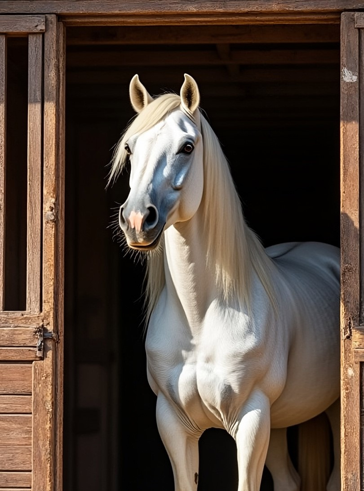
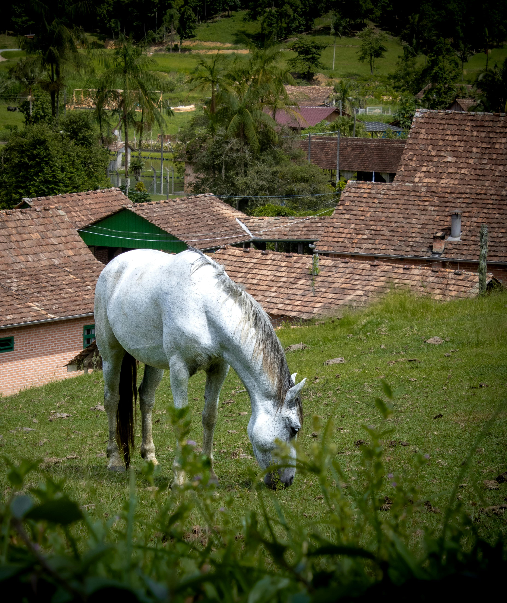
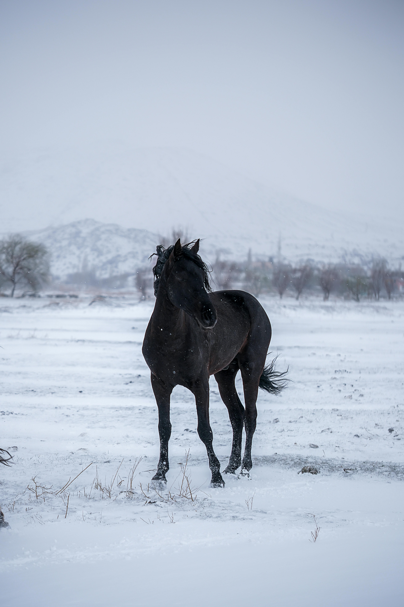
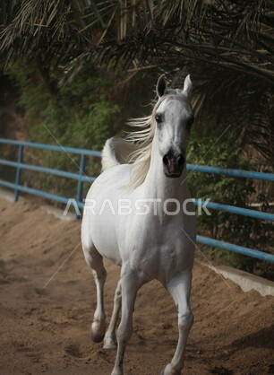

| السلالة | عربي أصيل (كحيلان) |
|---|---|
| العمر | 5 سنوات |
| المهارة الرئيسية | السرعة الفائقة والرشاقة |
| اللون | ابيض |
يُعد الحصان براق نموذجاً فريداً للخيول العربية الأصيلة التي تجمع بين الرشاقة المذهلة والقوة البدنية العالية. يتميز براق بسرعته الفائقة التي تجعله يتصدر سباقات الإسطبل دائماً، بالإضافة إلى ذكائه الحاد وقدرته على فهم توجيهات الفارس من اللمسة الأولى.
بفضل بنيته العضلية القوية وشعره اللامع، يخطف براق الأنظار في كل عرض، وهو الخيار الأول لمحبي الإثارة والسرعة في ركوب الخيل.